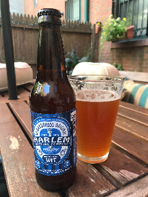

What they say: During the Renaissance, Harlem was a catalyst for artistic freedom and one of the most popular cultural destinations on the planet! Today, people visit from all over the world to discover why its community, history and ideals remain a global treasure. Enjoy Harlem style! Cheers!
Tina Says: When you pour into the glass this brew is a deep golden with a small frothy foam in a off white head that disappeared almost immediately. This beer is full bodied (more than I enjoy in the Summer) but not too heavy. Described by the brewer as refreshing and tasty Belgian style wheat ale, I would consider that a a bold description but not completely inaccurate. This beer was slightly sweet with a citrus fruit and honey flavor. I'm also guessing that there is some cinnamon or cardamon in the mix somewhere. The aftertaste is a slightly dry and a bit bitter. My overall review is that it is definitely drinkable but Harlem deserves better.